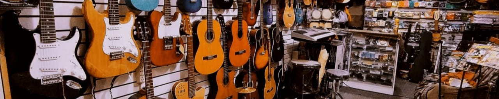
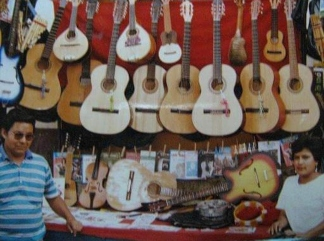

Quienes Somos?
La tienda de instrumentos Chegary es una tienda que se enfoca en apoyar a sus clientes brindandoles asesoria y recomendandoles el instrumento adecuado para su gusto, ademas de tener nustra propia marca de guitarras, la cual viene años siendo la preferida por nuestros clientes.

Fundador

Nuestro fundador Julian Echegaray Salazar nacio en Calca - Cuzco, llgo muy joven a Lima, realizando diferentes trabajos, y en 1978 junto a su hermano, empezó con la venta de guitarras, poco a poco con mucho esfuerzo y perseverancia logro iniciar su propio negocio, no sin antes pasar por algunas complicaciones.
Historia
Julian Echegaray empezó la venta de guitarras al lado de su hermano, carca al parque universitario, en la avenida Abancay, pero el tenia la vision de emprender por su propia cuenta, entonces junto a fabricantes de guitarras, empezó su propia tienda y marca y poco a poco se fue independizando. Empezó con una pequeña carreta en dondo colocaba algunas guitarra y demás productos, y poco a poco logro tener su primera tienda, así fue como implemento nuevos y mas variedad de productos, poco a poco haciendose notar ante sus clientes, por la calidad de las guitarras. Pero todo no termino ahí, con los años se implemento una segunda tienda, ubicada en la avenida Pacasmayo con Bocanegra, ampliando de esa manera la marca, la marca CHEGARY.
